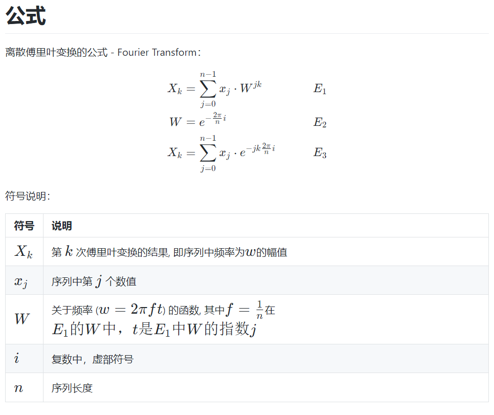
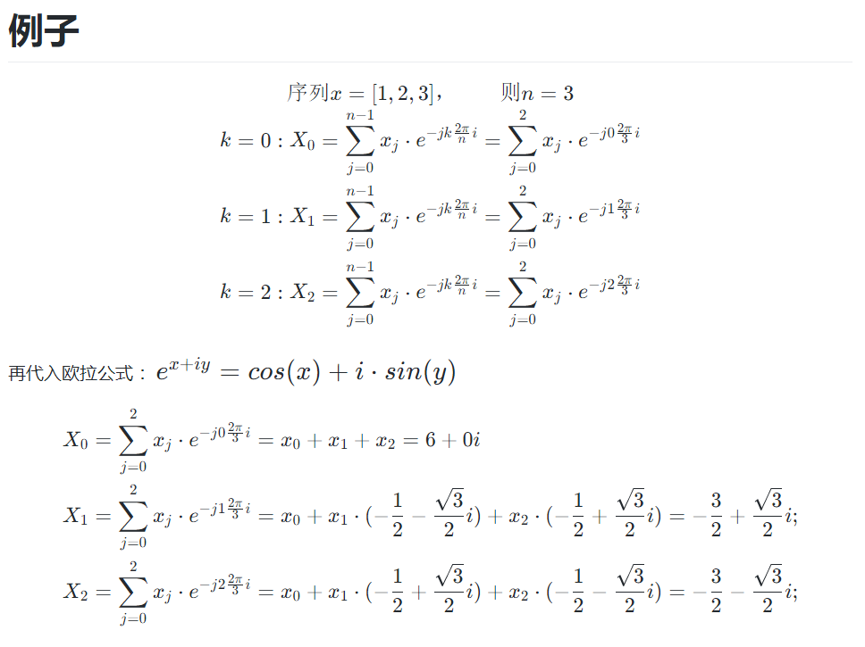

傅里叶变换
一维离散傅里叶变换DFT


# python实现的一维离散傅里叶变换，结果和上述手算的结果一样
# DFT_slow等价于np.fft.fft
import numpy as np
def DFT_slow(x):
x = np.asarray(x, dtype=float)
N = x.shape[0]
n = np.arange(N)
k = n.reshape((N, 1))
M = np.exp(-2j * np.pi * k * n / N)
return np.dot(M, x)
x = np.array([1,2,3])
y = DFT_slow(x)
print(y)
print(np.fft.fft(x))